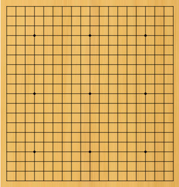

Le matériel de jeu traditionnel se compose d'un goban sur lequel est tracé un quadrillage de 19x19 lignes, soit 361 intersections, et de pierres qui sont soit noires, soit blanches. Mais rien n'empêche les joueurs d'utiliser un autre matériel, et en particulier des gobans de 13x13 ou 9x9 lignes pour les parties d'initiation.
Fig.1 : voici un goban de 19x19 lignes. Remarquez que certains points sont renforcés. On les appelle hoshi.
Deux intersections sont dites voisines quand elles sont sur la même ligne et sans autre intersection entre elles.
Diag.1 : 'a' et 'b' sont des intersections voisines, mais 'b' et 'c' ne le sont pas.
Deux pierres sont voisines si elles occupent des intersections voisines.
Une chaîne est un ensemble de une ou plusieurs pierres de même couleur voisines de proche en proche.
Les libertés d'une chaîne sont les intersections inoccupées voisines des pierres de cette chaîne.i
Un territoire est un ensemble de une ou plusieurs intersections inoccupées voisines de proche en proche, délimitées par des pierres de même couleur.